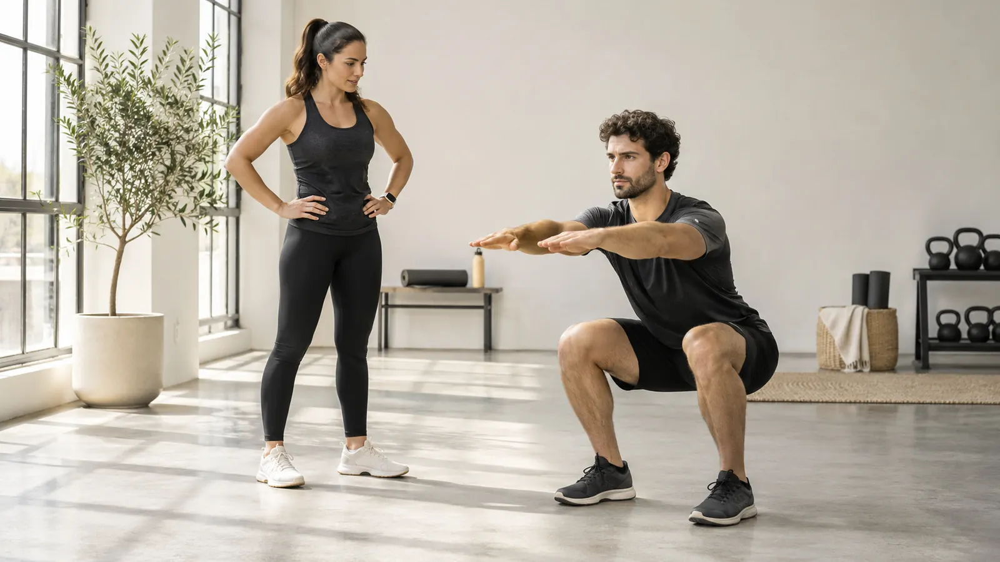
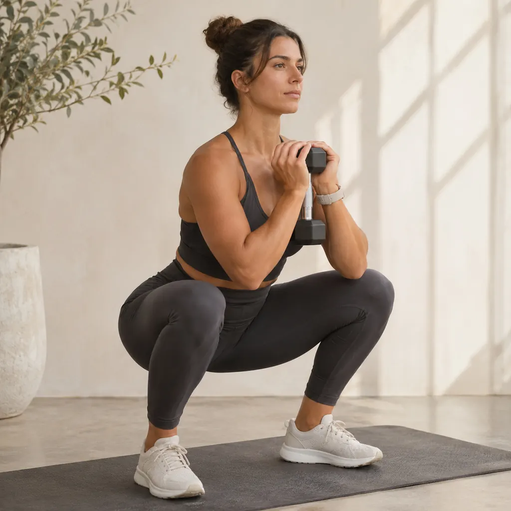
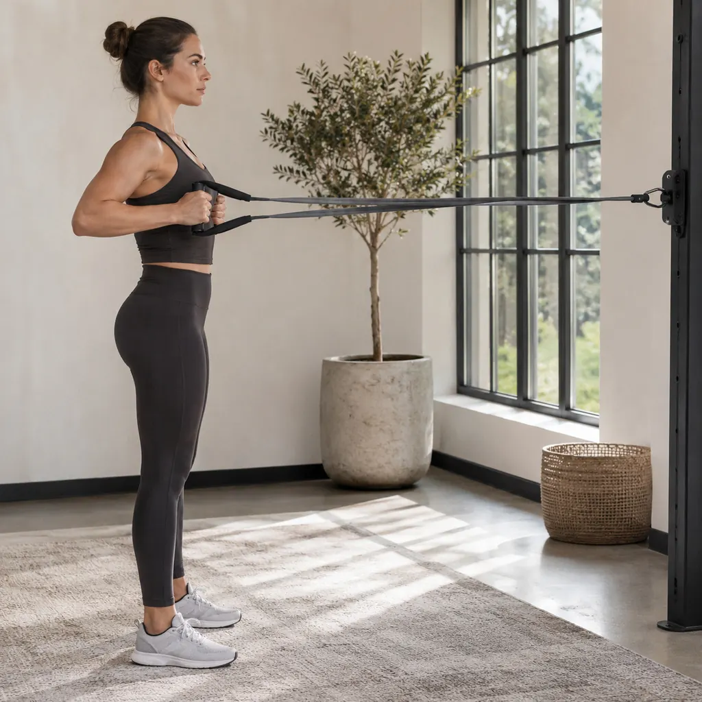
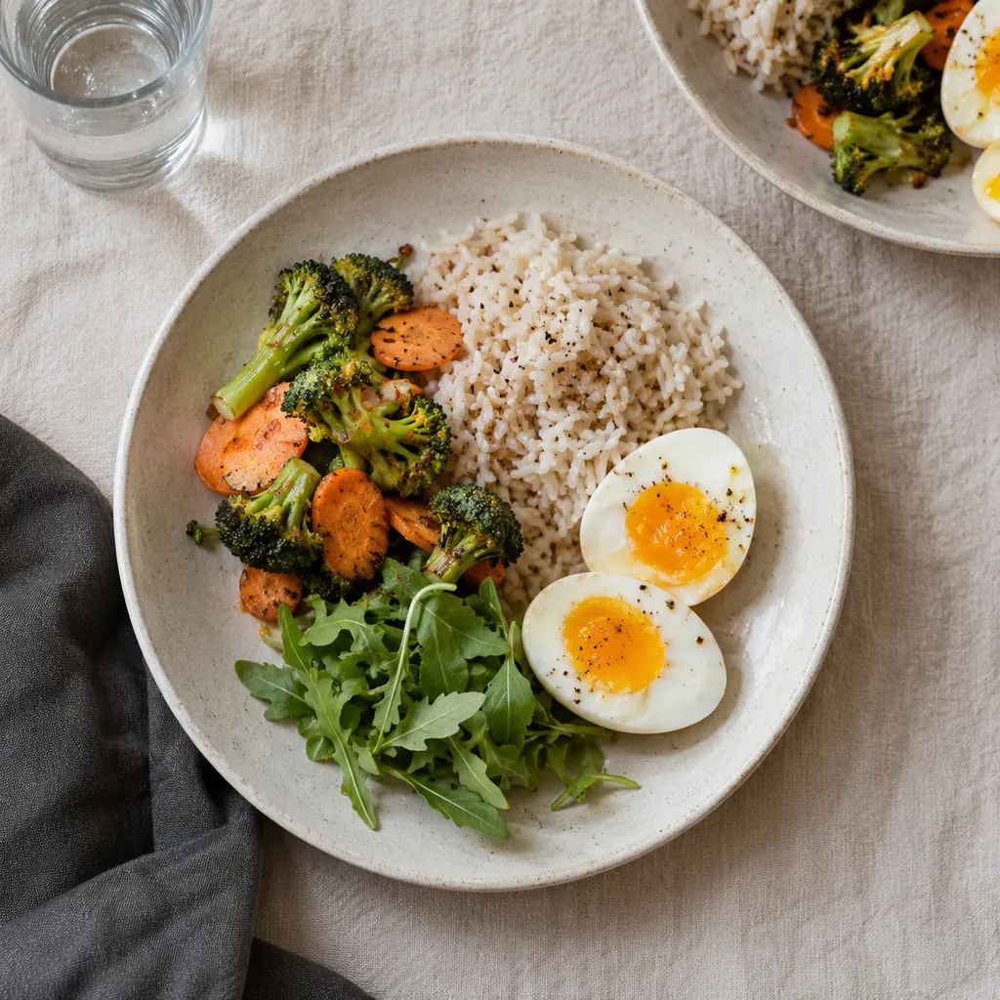
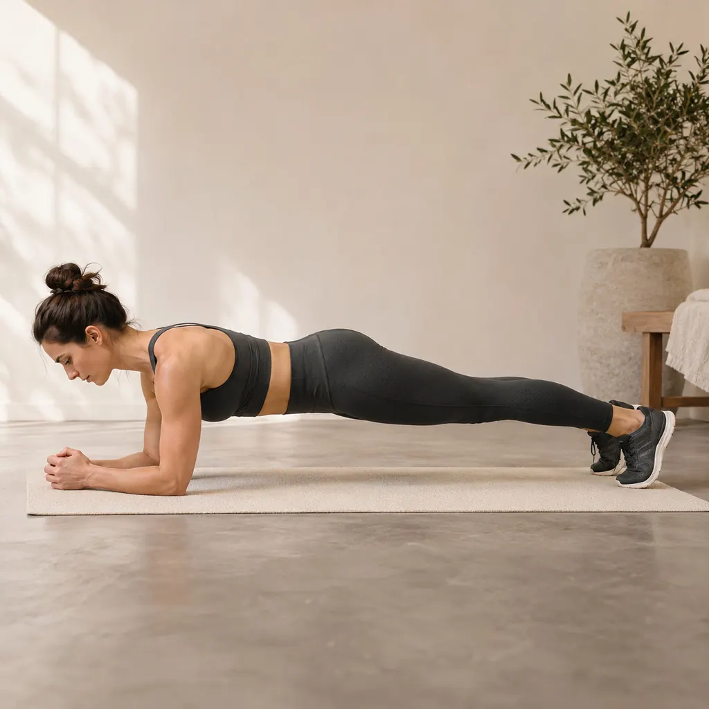
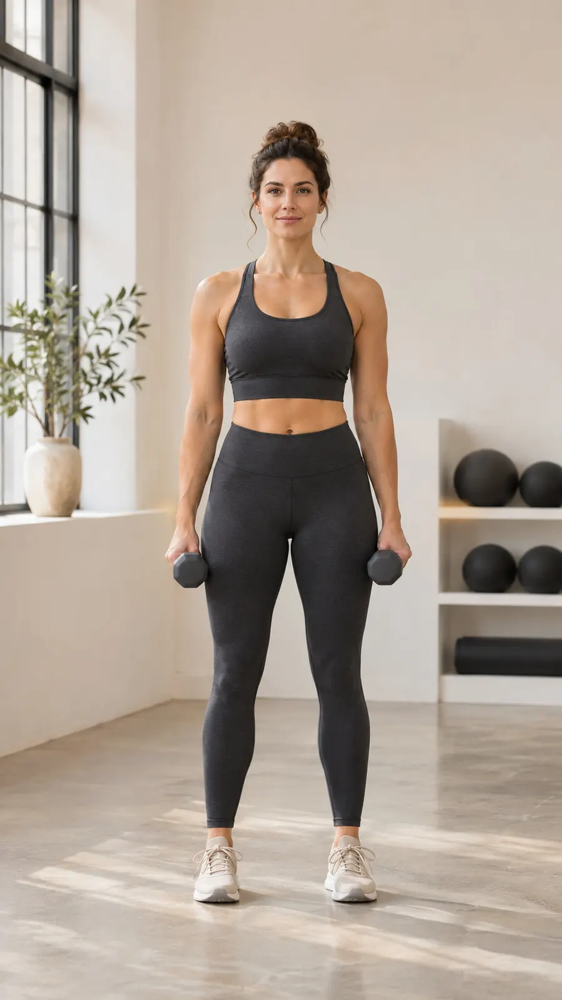
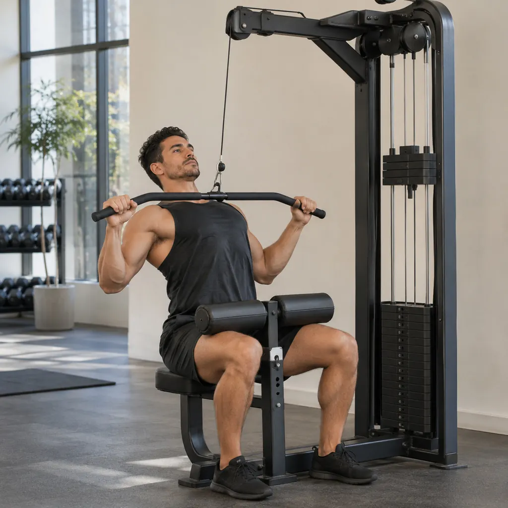

Entrenamiento personalizado online, con tu rutina en el celu
Rutinas según tu nivel, con foto e indicación técnica de cada ejercicio, y tu guía de alimentación en el mismo lugar.

Qué incluye tu plan
Todo lo que necesitás para entrenar por tu cuenta, con la mirada de Nat en cada sesión.




Cada sesión pensada para tu objetivo y tus tiempos: ejercicios, series, repeticiones y descanso, ordenados por día.
Cada ejercicio con su foto o GIF y la indicación técnica, para entrenar bien aunque estés por tu cuenta.
Una guía prescripta para acompañar el entrenamiento, en la misma app que tu rutina.
El programa avanza por bloques: adaptación, progresión, intensificación y una evaluación para ajustar.
Nivel, aprendizaje y transformación
Tres palabras que ordenan cada plan: desde dónde arrancás, qué aprendés y hacia dónde vas.
Nivel
Reconocer el punto de partida, las capacidades y las posibilidades de cada persona. Comprender que cada proceso es diferente y que la evolución comienza desde donde estamos.
Aprendizaje
Adquirir conocimientos, desarrollar técnica, mejorar la ejecución y construir conciencia corporal. Aprender a entrenar, conocer el propio cuerpo y ganar autonomía para cuidarlo.
Transformación
Evolucionar a través de un proceso sostenido. Desarrollar capacidades físicas, incorporar hábitos saludables y mejorar la relación con el cuerpo y la calidad de vida.

NAT no propone solamente entrenar. Propone un proceso de desarrollo, aprendizaje y evolución personal.
Natalia AguirrePersonal Trainer Int. · Mat. N.º 43121 · IFBB
Un programa real · Men’s Physique
Así se planifica un programa de 8 semanas
Objetivo del bloqueDesarrollo muscular, mejora de las proporciones físicas y construcción de una estructura estética característica de Men’s Physique.
Día 01
Tren inferior
Cuádriceps, glúteos y gemelos. Desarrollo del cuádriceps y equilibrio del tren inferior.
Día 02
Espalda y hombros
Amplitud dorsal, deltoides laterales, bíceps y abdomen. Construcción de la silueta en V.
Día 03
Cadena posterior
Isquiosurales, glúteos y gemelos. Desarrollo de la musculatura posterior de las piernas.
Día 04
Pecho y hombros
Desarrollo integral del pectoral, deltoides y tríceps. Mejora del volumen y la proporción del tren superior.
Día 05
Espalda y especialización
Espalda media, relieve dorsal, deltoides posteriores, hombros, brazos y abdomen.

8 semanas, por etapas
- Semanas 1–2Adaptación y aprendizaje técnico.
- Semanas 3–4Consolidación de la técnica y progresión de cargas.
- Semanas 5–6Desarrollo muscular e intensificación.
- Semana 7Estímulo y progresión.
- Semana 8Evaluación y ajuste del programa.
Panel de Nat · probalo acá
Las rutinas se arman en minutos y llegan al celu de cada alumno
Elegís al alumno, sumás ejercicios de tu biblioteca con su foto y ajustás series, repeticiones y descanso. La rutina de Men’s Physique ya está cargada: cambiá cualquier dato y mirá cómo se actualiza en el celu de Ramiro.
Así lo ve el alumno
Empezá desde tu nivel
Contale a Nat tu objetivo, cuántos días podés entrenar y desde dónde arrancás. Con eso diseña tu plan.
Preguntas frecuentes
¿Cómo recibo mi rutina?
Entrás con tu usuario desde el celu o la compu y la ves organizada por día, con la foto y la indicación técnica de cada ejercicio.
¿Y si no sé hacer un ejercicio?
Cada ejercicio tiene su foto o GIF y la indicación técnica de Nat. Ante cualquier duda, le escribís por WhatsApp.
¿La rutina cambia con el tiempo?
Sí. El programa avanza por etapas, de la adaptación técnica a la progresión de cargas, y cierra con una evaluación para ajustar.
¿Incluye alimentación?
Nat prescribe guías de alimentación y las ves en la misma app que tu rutina.